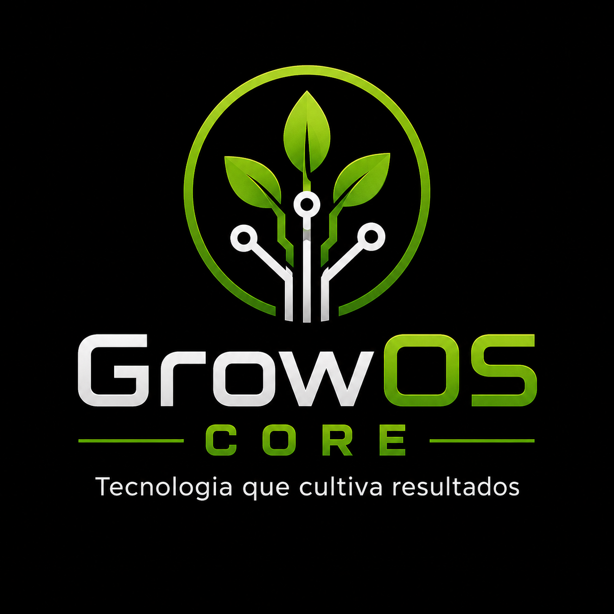

Automação Industrial
Processos padronizados, confiáveis e orientados por lógica operacional.

O GrowOS Core integra automação industrial, monitoramento em tempo real e banco genético em uma única plataforma desenvolvida para cultivos profissionais.
Processos padronizados, confiáveis e orientados por lógica operacional.
Indicadores claros para acompanhar o cultivo e agir com segurança.
Histórico, rastreabilidade e organização técnica das genéticas cultivadas.